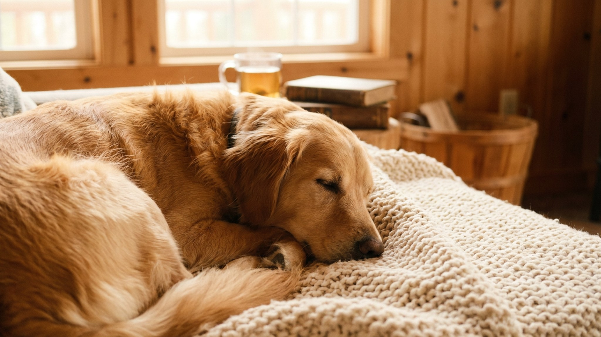

Младенец появляется дома — и для собаки это не радостное событие, а лавина перемен: чужой запах, незнакомые звуки, сломанный режим и вдруг меньше внимания. Именно здесь чаще всего и возникает напряжение, которое потом называют «собака ревнует». Хорошая новость: если начать за 3 недели до родов, большинство проблем можно снять ещё до того, как малыш переступит порог.
Самая распространённая ошибка — держать прежний распорядок вплоть до дня выписки, а потом резко его ломать. Собака связывает перемены с появлением ребёнка и начинает воспринимать его как причину всех неудобств.
Цель — чтобы к дню появления ребёнка новый распорядок был для собаки уже привычным, а не шоковым.
Нос собаки — её главный орган восприятия мира. Незнакомый запах младенца в первый день может вызвать настороженность или возбуждение. Снять это просто.
🐾 У вашей собаки так же?
Расскажите в AnimaLife, как ведёт себя ваш питомец, — приложение объяснит причину и даст пошаговый план. Бесплатно, без записи к специалисту.
Разобрать свой случай → Разобрать в MAX →
У вас iPhone? AnimaLife есть в App Store
Собаке нужно понять, где её место, а куда — нельзя. Но не менее важно не отлучить её резко от тепла и общения: если питомец почувствует, что ребёнок «забрал» хозяина, это создаст нежелательную ассоциацию.
День, когда ребёнок впервые появляется дома, — ключевой момент. Несколько правил, которые делают его спокойным.
Большинство собак принимают ребёнка в семью без конфликтов — при условии, что хозяева сами подготовились и не создали стресс резкими переменами.
🐾 Хотите понять, что собака говорит вам?
Опишите ситуацию или пришлите видео в AnimaLife — AI разберёт поведение вашего питомца и подскажет, что делать. Бесплатно, ответ за минуту.
Разобрать поведение → Разобрать в MAX →
У вас iPhone? AnimaLife есть в App Store
🐾 Понравился разбор?
Подпишитесь на канал — каждый день разбираем по одному тревожному симптому у кошек и собак: что в пределах нормы, а когда пора к врачу. Подпишитесь, чтобы не пропустить разбор, который может спасти здоровье вашего питомца.
Материал носит информационный характер и не заменяет очную консультацию ветеринара.